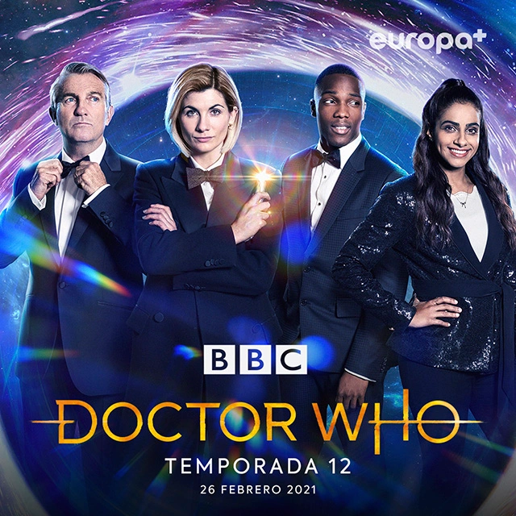

¿Qué es Doctor Who?
Doctor Who es una serie de televisión
británica de ciencia ficción producida por la
BBC. Está
dividida en dos etapas: la denominada serie clásica, emitida entre
1963 y 1989, y la serie moderna, iniciada en 2005 y que continúa
emitiéndose en la actualidad.
La serie narra las aventuras de un
Señor del Tiempo conocido como
"El Doctor", que explora el universo en
su tardis, una nave espacial
con conciencia propia capaz de viajar a través del tiempo y el
espacio. Con la ayuda de distintos acompañantes, el
Doctor se enfrenta a una variedad de enemigos mientras
salva civilizaciones, visita tanto el pasado como el futuro, ayuda
a gente común y corrige injusticias.
Doctor Who figura en el
Libro Guinness de los Récords como la serie de
televisión de ciencia ficción de
mayor duración del mundo
Historia
Origen
El grupo reducido de individuos que participaron en la creación de Doctor Who en 1963 incluye a Sydney Newman, quien impulsó la serie y estableció aspectos clave como la tardis y la personalidad del Doctor. Otros colaboradores importantes fueron Donald Wilson, CE Webber, David Whitaker y Verity Lambert, la primera productora ejecutiva de la serie. Anthony Coburn y Waris Hussein también fueron destacados, como escritor y director respectivamente del primer episodio, "An Unearthly Child". El tema musical, compuesto por Ron Grainer y transformado en una obra pionera en música electrónica por Delia Derbyshire, ha perdurado a lo largo de las décadas. El episodio inicial presentó al Doctor interpretado por William Hartnell, junto con William Russell, Jacqueline Hill y Carole Ann Ford como personajes principales.
Daleks
Después de la introducción inicial de personajes y conceptos en el primer episodio, los siguientes tres episodios de "An Unearthly Child" exploraron una modesta línea histórica con hombres de las cavernas prehistóricas. Sin embargo, la serie adquirió su identidad de ciencia ficción con el segundo serial, "The Daleks" de Terry Nation, que presentó a los Daleks, el enemigo emblemático de la franquicia. Este serial marcó el comienzo de la popularidad masiva de la serie, desatando la "Dalekmania" en el Reino Unido, con la producción de juguetes, la primera novela "Doctor Who in an exciting adventure with the Daleks", la adaptación cinematográfica de "Dr Who and the Daleks", y numerosas secuelas televisivas, incluyendo "The Dalek Invasion of Earth".
Doctor Who en el siglo xxi
La serie moderna de Doctor Who debutó en BBC One el 26 de marzo de 2005 con Christopher Eccleston como el noveno Doctor y Billie Piper como su acompañante Rose Tyler. Tras un rotundo éxito, la BBC encargó dos temporadas más protagonizadas por David Tennant como el décimo Doctor. La serie también estableció la tradición de episodios especiales navideños anuales. En 2008, Tennant anunció que dejaría el papel, dando paso a Matt Smith como el undécimo Doctor. La transición se narró en una serie de especiales. Luego, Smith fue sucedido por Peter Capaldi como el duodécimo Doctor en 2014. Jodie Whittaker asumió el papel como la decimotercera Doctora en 2017, protagonizando las temporadas 11 y 12. Ncuti Gatwa fue anunciado como la decimocuarta encarnación del Doctor, sucediendo a Whittaker a finales de 2022. La serie continúa con la producción de su temporada 13.
Personajes
El Doctor
El Doctor es un enigmático
viajero alienígena que ha existido desde los
años sesenta. Su verdadero nombre sigue siendo un misterio, y él
mismo se hace llamar "El Doctor". Viaja en una
máquina llamada tardis, que
es más grande por dentro que por fuera y tiene forma de cabina
de policía de los años 60 debido a un fallo en su sistema de
camuflaje. Acompañado por su
destornillador sónico, una herramienta versátil
que prefiere a la violencia, el Doctor lucha contra la
injusticia mientras explora el
tiempo y el espacio.
A lo largo de la serie, su personalidad ha evolucionado de
irascible a compasiva, y se reveló que huye de su pueblo, los
Señores del Tiempo de Gallifrey. Como
Señor del Tiempo, puede regenerar su cuerpo
cerca de la muerte, lo que le permite cambiar de apariencia y
actor protagonista. Tiene un límite de 12 regeneraciones, pero
ha encontrado formas de renovarse más allá de
este límite. Cada encarnación del Doctor tiene su propia
personalidad, gustos y habilidades.
-
William Hartnell
-
Patrick Troughton
-
Jon Pertwee
-
Tom Baker
-
Peter Davison
-
Colin Baker
-
Sylvester McCoy
-
Paul McGann
-
John Hurt
-
Christopher Eccleston
-
David Tennant
-
Matt Smith
-
Peter Capaldi
Acompañantes

El Doctor, a lo largo de su larga historia, ha
compartido la mayoría de sus aventuras con acompañantes, más
de 35 en total desde 1963. Estos acompañantes suelen ser
humanos y desempeñan roles clave, como
recordar al Doctor su deber moral. Algunos de
los primeros acompañantes incluyen a su nieta
Susan Foreman y dos profesores de escuela. A lo largo
de los años, ha tenido acompañantes notables como
Romana, una Señora del Tiempo,
Sarah Jane Smith y Jo Grant.
Desde la revitalización de la serie en 2005, los acompañantes
del Noveno y Décimo Doctor incluyeron a
Rose Tyler, Mickey Smith y el
Capitán Jack Harkness.
El Décimo Doctor también viajó con Martha Jones y Donna Noble, mientras que el Undécimo Doctor tuvo aventuras con Amy Pond, Rory Williams y ocasionalmente River Song. Clara Oswald fue la última acompañante del Undécimo Doctor y la primera del Duodécimo Doctor, seguida por Bill Potts en la última temporada. Los acompañantes cumplen el propósito de proporcionar un punto de identificación para la audiencia, descubrir información sobre el Doctor y avanzar en la historia al hacer preguntas o meterse en problemas. El Doctor suele encontrar y perder acompañantes, a veces debido a su búsqueda de nuevas causas o al regresar a su hogar, y en ocasiones, los acompañantes han muerto durante las aventuras.
Adversarios
Cuando Sydney Newman encargó Doctor Who, quería evitar el cliché del monstruo de ojos de insecto en la ciencia ficción, pero los monstruos se volvieron esenciales desde el principio y fueron populares. Algunos adversarios notables del Doctor incluyen Autones, Cybermen, Sontarans, Demonios Marinos, Guerreros de Hielo y Daleks, los más emblemáticos. Los Daleks, creados por Terry Nation como una alegoría de los nazis, son seres mutantes con armadura mecánica que proclaman "¡Exterminate!" Davros, su creador, se convirtió en un villano recurrente desde Genesis of the Daleks. Los Daleks causaron una tremenda reacción en la audiencia desde su debut en The Daleks en 1963-64.

Nueva temporada de Doctor Who
Disney Branded Television y la BBC han anunciado que la serie Doctor Who debutará su primera temporada en Disney+ a nivel mundial el viernes 10 de mayo a las 20:00 horas. El estreno incluirá el especial Rescate de Nochebuena, seguido de dos nuevos episodios. Los nuevos capítulos se lanzarán cada viernes en la plataforma. Además, Disney+ ha revelado un nuevo tráiler de la serie y una imagen mostrando al decimoquinto Doctor, interpretado por Ncuti Gatwa, y a su compañera, Ruby Sunday, encarnada por Millie Gibson.
De qué trata la nueva temporada de Doctor Who
En esta temporada, Doctor Who acompaña al Doctor y a Ruby Sunday en infinitas aventuras a través del tiempo y el espacio en la TARDIS. Desde el período de la Regencia en Inglaterra hasta futuros devastados por la guerra, el dúo defiende las fuerzas del bien mientras se encuentra con amigos increíbles y peligrosos rivales.
Russell T Davies, showrunner, productor ejecutivo y guionista, dijo: “Finalmente, tengo el enorme placer de presentar una nueva temporada de las aventuras del Doctor y Ruby juntos. Monstruos, persecuciones, villanos, misterios y un secreto aterrador que se estuvo manteniendo durante décadas a través del tiempo y el espacio ¡No se pierdan ni un segundo!”. El elenco de artistas invitados estará compuesto por Aneurin Barnard, Anita Dobson, Yasmin Finney, Michelle Greenidge, Jonathan Groff, Bonnie Langford, Genesis Lynea, Jemma Redgrave, Lenny Rush, Indira Varma y Angela Wynter. Doctor Who es una producción de Bad Wolf, junto con BBC
Studios para Disney Branded Television y la BBC. Bajo la visión creativa de Davies, los demás productores ejecutivos son Phil Collinson, Joel Collins, Julie Gardner y Jane Tranter. Los episodios de la nueva temporada están dirigidos por Ben Chessell, Jamie Donoughue, Julie Anne Robinson y Dylan Holmes Williams.